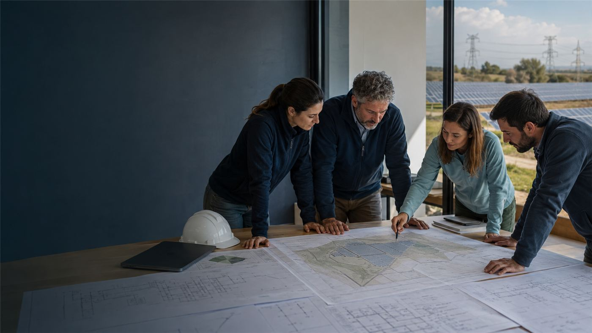

Quiénes somos
Capturam Ingeniería es una empresa especializada en el desarrollo de proyectos de energías renovables, con más de 17 años de experiencia en el sector. Trabajamos en solar fotovoltaica, eólica, almacenamiento BESS e instalaciones hibridadas, acompañando el proyecto desde la oportunidad inicial hasta su madurez técnica y administrativa.
Nuestra experiencia combina conocimiento del territorio, ingeniería especializada y gestión regulatoria. Esta visión permite evaluar con rapidez, anticipar condicionantes y coordinar la documentación necesaria para avanzar desde Greenfield hasta Ready to Build y, cuando el alcance lo requiere, hasta construcción y puesta en servicio.
Cada proyecto se aborda con método, trazabilidad y comunicación directa. Nuestro objetivo es que el cliente disponga de información fiable para decidir, una ingeniería consistente para tramitar y un seguimiento riguroso de los hitos que condicionan plazo, coste y viabilidad.

Principios de trabajo
Rigor técnico
Criterios de diseño explícitos, revisiones, control documental y entregables trazables.
Visión integral
Coordinación de red, suelo, ingeniería, medio ambiente y administración.
Anticipación
Identificación temprana de restricciones y alternativas antes de comprometer recursos.
Compromiso
Seguimiento continuo de hitos, responsables y próximos pasos.
Claridad
Comunicación técnica comprensible para facilitar decisiones del cliente.